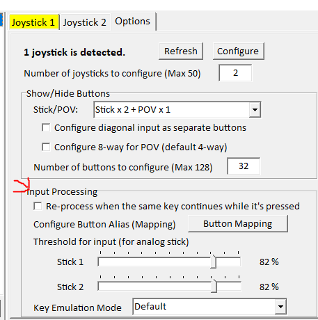

1. Open the official PPD website.
2. Click the "download" tab near the top left.

*You do not need a PPD account to play the game; however, you must have an account to save scores, upload custom charts, and have a profile picture + name during multiplayer.
3. Click the blue "PPD Installer (64bit)" button. This will download the PPDInstaller to your PC.

4. Extract and open the PPDInstaller folder, and start the application.

Select your language and download options.
Upon running the PPDInstaller, PPD will be located in the "KHC" folder.

Circled in red is the game itself. Click this to run the game.

You have now downloaded PPD!
PPD can be played with a keyboard or a variety of controllers (typically a DS4).
Before connecting a controller, be sure to complete the following steps first with a keyboard.
This guide will help you install a base version of PPD. To make the game look more like official Project Diva games, we will install mods later in this guide. For now, follow along:
1. Starting the PPD application for the first time will trigger an update. After this update is completed, you'll be met with this box:
If you made an account beforehand, go ahead and enter your account info. If not, hit cancel and the game will start normally.
2. You'll be met with this screen and will need to navigate with the mouse initially:

Click the arrow pointing to the right on the screen to progress. Continue to navigate until you arrive at the in-game inputs screen (Assign Key/Button).

Use the "Change" buttons to change the desired key/button bindings to whatever you like. These are our recommended controls. On keyboard, it is recommended to change the Home button to a more uncommon/unused key.
3. Once you are done, you will arrive at this screen. Use your new L and R buttons to navigate the menus.


From here, you can play with a keyboard if you wish.
Just be sure to add some songs to play and download our highly recommended/necessary mods first!
Press the key your circle button is binded to to confirm and start single-player or multiplayer mode.
To play with a controller, close PPD and continue with the controller setup guide.
We highly recommend downloading these mods here and activating them before playing.
After you have downloaded and extracted these mods, place them into the 'mods' folder in your main 'PPD' folder (which is inside the 'KHC' folder).

Now, restart PPD and enter single or multiplayer mode. Then, to activate the mods, press the key your square button is binded to, scroll to 'mods' and press circle/confirm/checkmark all of them.

- About the critical 'CSInput' Mod -
CSInput is a mod that allows the user to use the d-pad/wasd arrow keys for 8 key/8 button gameplay, much like Project Diva: Future Tone. So, you must have CSInput enabled if you are playing with 8 keys (and/or a controller). It works in both single-player and multiplayer. You do not have to checkmark the 'CSInput' mod if you are playing on a keyboard with 4 keys.
Typically, checkmarking CSInput will not allow you to save your scores/appear on leaderboards. Sometimes, enabling CSInput is not required to play/save scores on a chart, but it's up to the chart designer's decision (a little more likely if the chart designer is from our Discord community.)
WARNING! Be sure you have done everything in the Opening PPD For The First Time guide before proceeding.
There are various ways to set up a controller for PPD. This megathread will start by showing you our preferred method: downloading and configuring AntiMicroX with a DS4 controller (AKA: a PS4 controller).
This preferred method will allow you to optimize your controller inputs (use sticks, left d-pad, right d-pad, square, circle, L1 and R1 buttons for sliders).
- Option 1: AntiMicroX with a DS4 Controller -
Make sure PPD is closed before opening AntiMicroX. Once you have finished setting up AntiMicroX, then you can open PPD.
1. Click here to go to the github page for AntiMicroX. Scroll to the bottom where it says 'Assets,' then click to download the version that matches your computer's operating system. (For the most common Windows user, that would be 'antimicrox-3.5.1-Windows-AMD64.')

2. Once you have AntiMicroX downloaded, run the .exe as Administrator (hover over the AntiMicroX app icon, right-click, then click 'Run as Administrator.').
3. Click here to download the amazing awesome PPD Discord server owners' (and one of the creators of this websites') controls. Yes, it'll look like a bunch of code, but just press the 'Download' button at the top right and download it.

4. On AntiMicroX, press the 'load' button, then select the controls config you just downloaded. This will load up the correct controls automatically!

5. Play PPD with AntiMicroX running at the same time. You may need to navigate to the Assign Key/Button screen in PPD again and map the controls you're using on your controller. To do this, click the 'change' buttons on each section and then click the corresponding button on your controller.
WARNING! Be sure you have the 'CSInput' mod enabled if you're playing with a controller! Otherwise, your d-pad will not register the right keys when playing a song. If you don't have the CSInput mod, you can download it along with all other necessary/highly recommended mods here. After you have downloaded and extracted these mods, place them into the 'mods' folder in your main 'PPD' folder (which is inside the 'KHC' folder). To enable these mods, press square while on the song selection screen in-game, scroll to 'mods,' and press circle to checkmark all of them before playing (but after you have set up your controller)! See Downloading Necessary Mods if you are still confused.
- Option 2: JoyToKey -
JoyToKey is another program that allows controllers to emulate keyboard inputs. Make sure PPD is closed before opening JoyToKey. Once you have finished setting up JoyToKey, then you can open PPD.
1. Click here to be taken to the JoyToKey download page.
2. Scroll down to the 'Download the Latest Version' section and click 'Download JoyToKey installer (from joytokey.net).'
3. Run the installer and open the JoyToKey application.
4. Plug your controller into your PC. Then, create a new JoyToKey profile and call it 'PPD.'

Any controller connected will highlight the Joystick profiles yellow or green.
Any button inputs on the controller will highlight the corresponding button on JoyToKey the same color.
5. Change whatever button is pressed to the same key set in the ingame PPD keyboard controls.
The recommended key binds for Left and Right stick would be left stick left = L, left stick right = R while right stick left = square, right stick right = circle.
To adjust analog stick sensitivity, go to options and go down to input processing. The higher the percentage, the lesser the sensitivity.
IMPORTANT NOTE ABOUT JOYTOKEY:
JoyToKey is unable to emulate hold transfers, nor is it able to recognize multiple inputs of the same key binding. For example if square is bound to H on the keyboard and R2 has HJKU as a quad macro, if you were holding down square and tried to switch to R2 for holds, the hold will break. Additionally, if you were to hold down square, and press R2 for a multi note, the note would miss because the program thinks the square key was already being pressed.
WARNING! Be sure you have the 'CSInput' mod enabled if you're playing with a controller! Otherwise, your d-pad will not register the right keys when playing a song. If you don't have the CSInput mod, you can download it along with all other necessary/highly recommended mods here. After you have downloaded and extracted these mods, place them into the 'mods' folder in your main 'PPD' folder (which is inside the 'KHC' folder). To enable these mods, press square while on the song selection screen in-game, scroll to 'mods,' and press circle to checkmark all of them before playing (but after you have set up your controller)! See Downloading Necessary Mods if you are still confused.
- Controller Setup Video Guides -
Option 1: AutoHotKey
This option provides the controls most similar to Project Diva: Future Tone.
WARNING! Be sure you have the 'CSInput' mod enabled if you're playing with a controller! Otherwise, your d-pad will not register the right keys when playing a song. If you don't have the CSInput mod, you can download it along with all other necessary/highly recommended mods here. After you have downloaded and extracted these mods, place them into the 'mods' folder in your main 'PPD' folder (which is inside the 'KHC' folder). To enable these mods, press square while on the song selection screen in-game, scroll to 'mods,' and press circle to checkmark all of them before playing (but after you have set up your controller)! See Downloading Necessary Mods if you are still confused.
This video guide was made by the epic PalmTree Freak (PPD's #1 Dad). Thank you, Palm!
Option 2: Steam Big Picture Mode
WARNING! Be sure you have the 'CSInput' mod enabled if you're playing with a controller! Otherwise, your d-pad will not register the right keys when playing a song. If you don't have the CSInput mod, you can download it along with all other necessary/highly recommended mods here. After you have downloaded and extracted these mods, place them into the 'mods' folder in your main 'PPD' folder (which is inside the 'KHC' folder). To enable these mods, press square while on the song selection screen in-game, scroll to 'mods,' and press circle to checkmark all of them before playing (but after you have set up your controller)! See Downloading Necessary Mods if you are still confused.
This video guide was made by the one and only Cyan Dreams (PPD's #1 Touhou Enjoyer). Thank you, Cyan!
Making an account is not necessary if you only want to play the game and not use account features (saving scores, uploading custom charts, having a profile picture + name during multiplayer, etc.)
1. Click the "sign up" tab at the top right corner of the official PPD website.
We highly recommend specifically clicking this "sign up" tab in the top right corner. The blue button has been known to not work.

2. Enter a valid e-mail address and click "Register."

Things to be mindful of when making an account:
1. No username that's already be used.
2. No E-Mail address that's already been used/deactivated.
3. No symbols in the password (only alphanumeric + capitalization allowed)
You have now made a PPD account!
There are two main ways to download songs to play on PPD:
A. Manually Downloading Charts From The Official PPD Website
1. Click here to visit the official PPD website's score library. Every song uploaded to the website will be available here. There are a LOT of pages of songs to browse through - it goes all the way back to 2012.
To search for a specific song, look up either the English or the Japanese title (romaji or kana) in the search bar. The website will not take incorrect or similar spelling, so you will need to be broad enough to make sure you are able to find what you are looking for.
2. Once you've found a chart to play, click the blue 'Download' button on the chart page on the website.

3. Extract the folder from the .zip file (it should be titled the name of the song you downloaded). Then, put that folder into your songs folder in the KHC folder.


4. You will also need to separately download the video associated with the chart. The webpage will have a target url for you to copy and use to download the video you need.
You could use any converter to download the video, but we recommend this site if it's a YouTube video.
5. Place the .mp4 video file into the folder you just downloaded (for example, the folder titled 'All Star by Smash Mouth').
It should look like this:

Now, as long as that song (for example, All Star by Smash Mouth) folder is in your 'songs' folder (the big one that has all of your songs in it) you should be able to open PPD and play it.
B. Downloading Song Packs
Check out our Song Packs page to browse and download song packs from our community chart designers!
These song packs include charts that already have a .mp4 video file in their folder, so you don't have to download and add them manually yourself.
Simply download a song pack, extract it, then drag and drop the songs you want/the whole song pack folder into your 'songs' folder (the one in the main 'PPD' folder, which is in your 'KHC' folder.)
This guide was originally written by MarathonGuy (PPD's #1 Steins;Gate Enjoyer). Thank you, Marathon!
Warning! You still need to run the PPD installer first before downloading this preinstalled version to get the fonts and other necessary programs. See the 'Downloading PPD' section of this guide for a tutorial on how to run the PPD Installer. Once you have ran the installer and downloaded this preinstalled version, paste the preinstalled version into the fresh PPD installation and overwrite everything. If it gives you an error about version mismatch, paste this file into the main folder.
Downloading this preinstalled version of PPD is currently the simplest way of jumping straight into the game. Click here to download.
Note that you will still have to set up a controller if you wish to play with one. See the controller setup guide for a tutorial on that.
The EXODUS skin is a fanmade menu skin mod that will make your game look better than the base version of PPD. If you'd like to choose a different menu skin, browse them at our skins/mods tab. For a tutorial on applying menu skins, click here.
This installation includes all of the necessary quality of life mods to make your gameplay experience more enjoyable. Be sure to activate them in-game by opening the menu (press square), navigate to the "Mods" section, and activate the mods you want to use with the circle button.
Be sure to add some songs to play as well! Have fun!
This pre-installed version of PPD was put together by Lyria (PPD's #1 PPD Enthusiast). Thank you, Lyria!